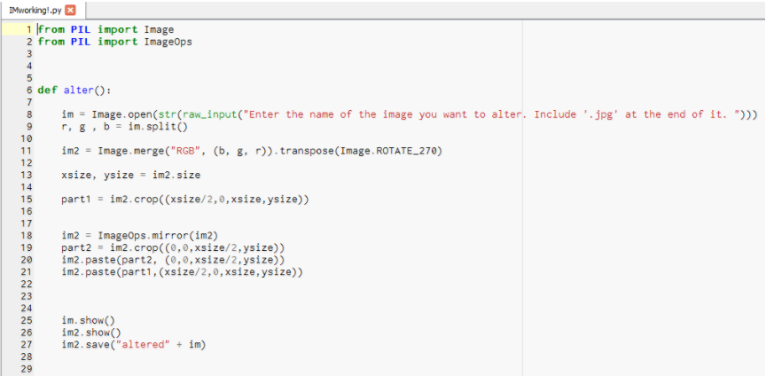
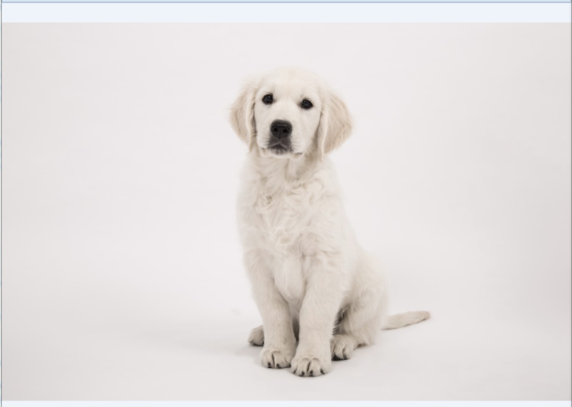
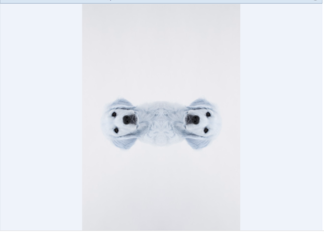
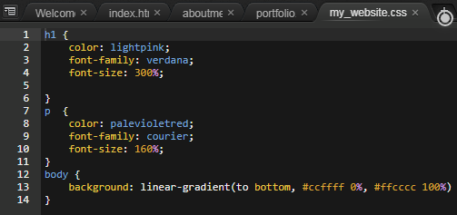
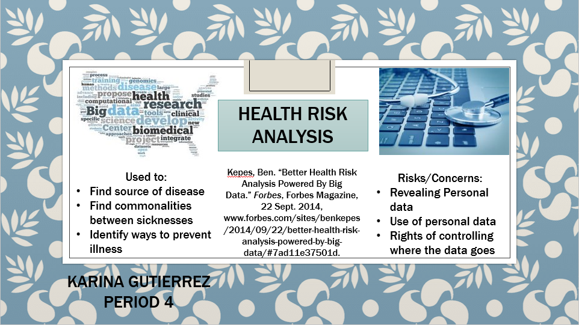
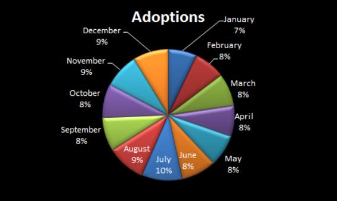
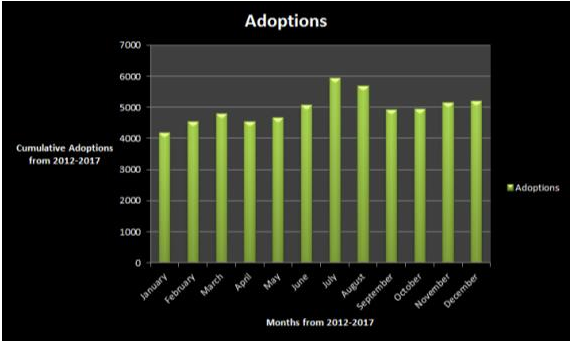

This is my Portfolio Page!


In this project, the goal was to create a playable game with choices for the player. The game my partner, Dindi Santos, and I created was able to meet that goal, all while looking aesthetically pleasing, having an intersting story, and running smoothly. The story of the game was brief and engaging; it was about a small group of two birds that go around helping other animals. The game's programming consisted of many broadcasted signals that triggered event that would further the story, and lists that kept the available stories seperate from each other. Each of the broadcasts were given specific names that would indicate what they shoud be triggering and mixed with the lists, they acted as one-way-flags to prevent going backwards in the story. Nesting, putting one inside the other, several if-then's was also key to the functionality of the game; incorporating it with different variables that would be put in list made other one-way-flags. Although the games was fully-functioning and I was able to learn how to make choice dependent events within Scratch, the game was lacking a few areas. The animations could have been made smoother using blocks to creat flying, walking, and talking animations for each of the characters. More user interactions could have been added as well,rather then having simple point and click choices.

The goal of this project was to use the MIT App Inventor with block coding to create Quizzer,the app me and my partner Tiffany Gunawan came up with. This app was made to help students keep track of all their vocabulary words, similar to Quizlit, but ours had a game to help. The game would randomly select a word of a list and give several definitions of the same list for the user to match from. The user was able to create and adjust sets of words before playing the game and choosing which list to be quizzed on. These actions were accomplished through the usage of several screens:the home screen, list making screen, list editing screen, and the game screen. These screens consisted of global variables made to help when it came to combining smaller lists,the term and definition, into bigger lists, the set of vocabulary words. The sets were then saved in tiny data bases so they could be accessed later in other screens. Though the app made the basic requirements, if given the time, my partner and I would have made Quizzer more user friendly and would have figured out how to randomize where the answer to the term would be.
The purpose of this project was to create a story in python whose ending was decision-dependent. My partner, Jackie, and I came up with a medievil story that took the user on an adventure through a dungeon as a king-appointed knight set on conquering a ferocious beast. In that story comes multiple decisions regarding a farmer and pyromancer that can join the knight's party and assist in killing the beast. The story's coding is simplistic and consists of various if-else functions that allow the story to branch off depending on the choice made. The user needs only to type one of the two letters provided when told it is time to make a decision. Were I able to continue adjusting this story, I would make the story's branching off points more complicated and connected to one another with more endings, and make it so if the user types in something other than what is prompted the program will repeat the prompt until given an acceptable answer.
In this project, Austin Holland and I were able choose among several game-like ideas to create into a program using python. We chose to make a langauge translator that would translate from English to our own made-up language, Folk Brother, and vice versa. The coding of the prgram consists of two dictionaries of the language key, one that goes from English to FB and one that goes the other way, a list that appears to the user as a langauge key, and four functions. The translate function prompts the user to choose which language they want to translate to, the lowerChar function simply defines 'char' and allows a translated phrase to be returned, the english function translates from English to Folk Brother, and lastly the fb function translates from Folk Brother to English. Both the fb and english functions check the raw input provided by the user to ensure it only contains characters on one side of the key, depending on the language chosen, and if those characters are lowercase in the case of typing in English. They also allow for the user to switch which language they are typing in after each translation. A few things I would add if given the opportunity, would be a test function and a function that stops the translating loop all together.



This project was broad in terms of how to choose to manipulate an image, or add an Instagram or Snapchat-like filter to an image. My partner Cecilia and I collaborated to make a program in python that takes an image, rotates it 90 degrees clockwise and counter clockwise to cut out two parts that are merged together. The final merged image appears to have a mirrored affect. along with a change of color in hues of blues and greens. If we were given the oportunity to work on this further, we would have mirrored the image several times at different angles to create a kaleidoscope affect.

This smaller project's purpose was to give my website an aesthetically pleasing style for each of its tabs. By creating another tab and transfering the code I had for my style onto that new tab I was able to create a simpler way of changing my style throughout the whole website. The CSS stylesheet allows me to only need to make chnages in one place of coding, whereas my previous method required me to go to each individual tab if I wanted to change how the website looked. This project took no more than one day, so there was no planning or making daily project goals as with the other projects.
Working with Connor Burns and Albert Luna, we created a presentation on the famous malware refered to as Stuxnet. Over the course of a few days we split the work in terms of who would look up certain aspects on the malware and make corresponding slides. Through this, we found that Stuxnet started out as malware intended to destroy nuclear plants by taking over their computers to get them to destroy themselves. Stuxnet targets programmable logic controllers and uses them to get control of other PLC's connected to them until they have full control. Two patches were released and now Stuxnet is not of much threat to anyone. The purpose of this presentation was to get a glimpse of the damage malware can cause and how it can be fixed or avoided. Malware in general can be protected against using security and protection programs or avoiding sketchy websites.

This small presentation was asigned to show he practial uses of big data and the problems with using big data. There are many uses for big data, such as using it for observaion of patterns and making predictions. This is exactly what Health Risk Analysis does; medical data from thousands of patients are taken without their identity given to use for medical investigations. The copius amounts of information help medical researcher discover patterns in the movement, causes, effects, and characteristics of many illnesses. However, many people are sill unsure of the ethics of giving groups of people in power access to such personal data. Their may be a leak of this sensitive data and people could be put at risk. Aside from who can have access o the data or wha te data is to be used for, their are problems wih using so much data. The enormous amount of data makes it difficult to process and use every medical record on the planet because it would ae computers too long to process or sift through it all.


The Data Analysis project was used to learn how to manipulate data into a form for easier interpretation. My partner Flor Hernandez and I chose to do search up raw data on dog adoptions because we were curious about when dogs are usually adopted more often during the year. What we did is get raw data on monthly adoptions in Los Angeles as a representative sample for all dog adoptions, then went through the data to take out what was unnecessary. Using excel, we put the data into a pie chart and histogram, and determined that in July is when there are the most adoptions. Were I to be given more time on this little investigation, I would get more data from different locations across the United States and compare them to get a more accurate answer.
Through the 3D Solids module on NetLogo, my partner Dindi and I made simple modifications to the coding. The original coding made basic symmetrical shapes spin in the negative and positive x direction in terms of a typical x and y coordinate sytem. The simulation allowed the shape to be viewed from the side, top, and bottom while it spun. Our adjustment to the coding no longer made the shape symmetrical; the shapes were "squished" down and elongated. The purpose of this was to see how a simulation can be used to make predictions or see trends, and to see how a simulation can be ajusted to suit the needs of te module. Simulatios like the 3D Shape simulator are used to simplify real life occurences with abstractions by using only data that is useful and can be adjusted for the needs of those observing the module. Were my partner and I to be given more than just one period to work on this, we would have made greater modificaion to the program, such as attempting to add in another shape. Adding in a shape would need me to add another button and code how the shape would look.